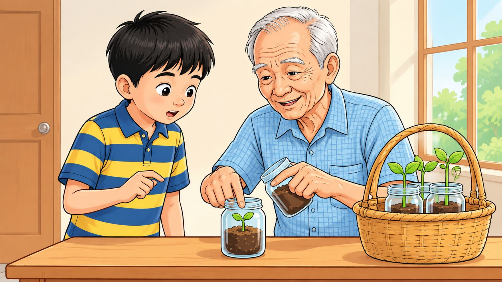

🔊 BẤM ĐỂ NGHE BÀI ĐỌC
1. Một hạt muồng hoàng yến bé nhỏ đã ngủ quên từ lâu lắm trong vỏ cứng. Rồi một ngày, nó trương nở, vỏ mềm dần. Bum! Hạt đã nảy mầm. Nó cắm rễ xuống nền đất ẩm mềm, vươn dậy trong chiếc lọ thuỷ tinh. Quanh nó là ba lọ mầm đậu đen đã cao, lá xanh nõn.
– Nó chậm nảy mầm hơn hạt đậu đen hả ông? – Thuỵ thắc mắc.
Ông nội nói, giọng trầm trầm:
– Thế nên mới cần ngâm nó vào nước trước khi gieo. Những loài cây ngủ muộn thường khoẻ, có vòng đời dài và cao lớn hơn loài cây mọc nhanh. – Vừa nói, ông vừa cẩn thận xếp những lọ cây vào giỏ.
2. Thuỵ mang giỏ cây đến lớp. Giờ thực hành, cô giáo bảo học sinh đặt lọ cây lên bàn, cô sẽ kiểm tra. Đến bàn của Loan, cô cầm lọ lên xem. Trong lọ chẳng có cái mầm nào.
– Ươm cây gì đây, em?
– Dạ, cây gấc ạ.
Cô giáo thận trọng gạt lớp đất phía trên. Cái hạt gấc rắn cấc màu đen sừng hiện ra. Nó còn chưa nứt nanh.
Loan giơ tay:
– Hạt gấc này em lấy trong chõ xôi ạ.
Xung quanh rộ lên tiếng bàn tán: Một cái hạt nấu chín còn mọc mầm thì một con gà luộc vẫn có thể đẻ trứng!
– Nó chỉ chưa nảy mầm thôi. – Loan cãi.
Cô giáo ra hiệu cho cả lớp im lặng, từ tốn nói:
– Mỗi cái hạt là một cơ thể sống thực thụ, nó chỉ đang ngủ thôi. Để đánh thức và kích thích các hạt có vỏ cứng nảy mầm, người ta thường ngâm chúng vào nước nóng. Thay vì ngâm, hạt gấc này được đồ trong chõ xôi. Với loại hạt ngủ lâu như hạt xoan, người ta còn đốt vài phút trước khi gieo cho chóng nảy mầm... Bây giờ, các em theo cô, mang những cây này ra vườn trồng.
Đám học trò hí hửng mang cây của mình đi theo cô giáo.
1. Thuỵ và các bạn ươm mầm để làm gì? (Chọn 1 đáp án đúng nhất)
2. Chi tiết nào cho thấy Thuỵ quan sát và nhận xét rất đúng về quá trình nảy mầm của hạt đậu đen và hạt muồng hoàng yến? (Chọn tất cả ý đúng)
3. Khi thấy hạt gấc của Loan chưa nảy mầm, các bạn trong lớp đã có thái độ như thế nào? (Chọn 1 đáp án đúng nhất)
4. Theo lời giải thích của cô giáo, người ta thường làm gì để “đánh thức” những loại hạt có vỏ cứng hoặc ngủ lâu như hạt xoan, hạt gấc? (Chọn 1 đáp án đúng nhất)
5. Theo em, Thuỵ, Loan và các bạn đã học được những gì từ tiết thực hành? (Chọn tất cả ý đúng)
🎤 THỬ TÀI KỂ CHUYỆN: Dựa vào 4 bức tranh minh họa dưới đây, em hãy kể lại câu chuyện “Hạt nảy mầm” bằng lời của mình và ghi âm/nộp bài nhé!

Tranh 2: Ông nội và Thụy🎙️ GHI ÂM HOẶC NỘP TỆP ÂM THANH (MP3, WAV, M4A)